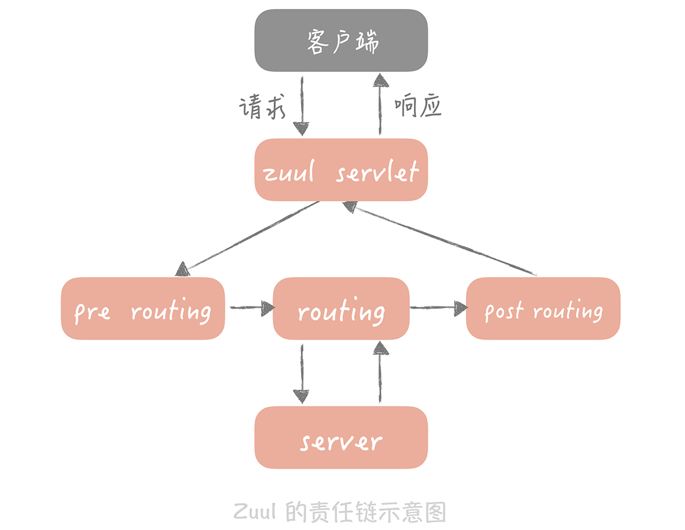
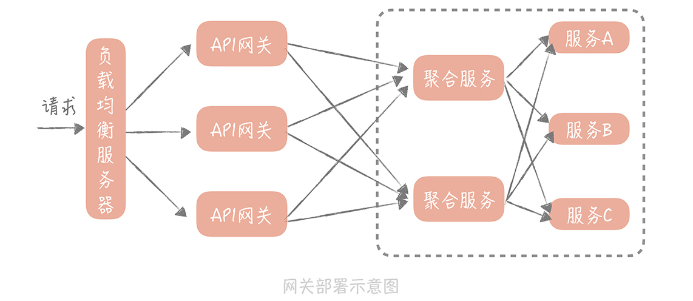

- 00 开篇词 为什么你要学习高并发系统设计？.md.html
- 01 高并发系统：它的通用设计方法是什么？.md.html
- 02 架构分层：我们为什么一定要这么做？.md.html
- 03 系统设计目标（一）：如何提升系统性能？.md.html
- 04 系统设计目标（二）：系统怎样做到高可用？.md.html
- 05 系统设计目标（三）：如何让系统易于扩展？.md.html
- 06 面试现场第一期：当问到组件实现原理时，面试官是在刁难你吗？.md.html
- 07 池化技术：如何减少频繁创建数据库连接的性能损耗？.md.html
- 08 数据库优化方案（一）：查询请求增加时，如何做主从分离？.md.html
- 09 数据库优化方案（二）：写入数据量增加时，如何实现分库分表？.md.html
- 10 发号器：如何保证分库分表后ID的全局唯一性？.md.html
- 11 NoSQL：在高并发场景下，数据库和NoSQL如何做到互补？.md.html
- 12 缓存：数据库成为瓶颈后，动态数据的查询要如何加速？.md.html
- 13 缓存的使用姿势（一）：如何选择缓存的读写策略？.md.html
- 14 缓存的使用姿势（二）：缓存如何做到高可用？.md.html
- 15 缓存的使用姿势（三）：缓存穿透了怎么办？.md.html
- 16 CDN：静态资源如何加速？.md.html
- 17 消息队列：秒杀时如何处理每秒上万次的下单请求？.md.html
- 18 消息投递：如何保证消息仅仅被消费一次？.md.html
- 19 消息队列：如何降低消息队列系统中消息的延迟？.md.html
- 20 面试现场第二期：当问到项目经历时，面试官究竟想要了解什么？.md.html
- 21 系统架构：每秒1万次请求的系统要做服务化拆分吗？.md.html
- 22 微服务架构：微服务化后，系统架构要如何改造？.md.html
- 23 RPC框架：10万QPS下如何实现毫秒级的服务调用？.md.html
- 24 注册中心：分布式系统如何寻址？.md.html
- 25 分布式Trace：横跨几十个分布式组件的慢请求要如何排查？.md.html
- 26 负载均衡：怎样提升系统的横向扩展能力？.md.html
- 27 API网关：系统的门面要如何做呢？.md.html
- 28 多机房部署：跨地域的分布式系统如何做？.md.html
- 29 Service Mesh：如何屏蔽服务化系统的服务治理细节？.md.html
- 30 给系统加上眼睛：服务端监控要怎么做？.md.html
- 31 应用性能管理：用户的使用体验应该如何监控？.md.html
- 32 压力测试：怎样设计全链路压力测试平台？.md.html
- 33 配置管理：成千上万的配置项要如何管理？.md.html
- 34 降级熔断：如何屏蔽非核心系统故障的影响？.md.html
- 35 流量控制：高并发系统中我们如何操纵流量？.md.html
- 36 面试现场第三期：你要如何准备一场技术面试呢？.md.html
- 37 计数系统设计（一）：面对海量数据的计数器要如何做？.md.html
- 38 计数系统设计（二）：50万QPS下如何设计未读数系统？.md.html
- 39 信息流设计（一）：通用信息流系统的推模式要如何做？.md.html
- 40 信息流设计（二）：通用信息流系统的拉模式要如何做？.md.html
- 加餐 数据的迁移应该如何做？.md.html
- 期中测试 10道高并发系统设计题目自测.md.html
- 用户故事 从“心”出发，我还有无数个可能.md.html
- 结束语 学不可以已.md.html
- 捐赠
27 API网关：系统的门面要如何做呢？
你好，我是唐扬。
到目前为止，你的垂直电商系统在经过微服务化拆分之后，已经运行了一段时间了，系统的扩展性得到了很大的提升，也能够比较平稳地度过高峰期的流量了。
不过最近你发现，随着自己的电商网站知名度越来越高，系统迎来了一些“不速之客”，在凌晨的时候，系统中的搜索商品和用户接口的调用量，会有激剧的上升，持续一段时间之后又回归正常。
这些搜索请求有一个共同特征是，来自固定的几台设备。当你在搜索服务上加一个针对设备 ID 的限流功能之后，凌晨的高峰搜索请求不见了。但是不久之后，用户服务也出现了大量爬取用户信息的请求，商品接口出现了大量爬取商品信息的请求。你不得不在这两个服务上也增加一样的限流策略。
但是这样会有一个问题：不同的三个服务上使用同一种策略，在代码上会有冗余，无法做到重用，如果其他服务上也出现类似的问题，还要通过拷贝代码来实现，肯定是不行的。
不过作为 Java 程序员，你很容易想到：将限流的功能独立成一个单独的 jar 包，给这三个服务来引用。不过你忽略了一种情况，那就是你的电商团队使用的除了 Java，还有 PHP 和 Golang 等多种语言。
用多种语言开发的服务是没有办法使用 jar 包，来实现限流功能的，这时你需要引入 API 网关。
API 网关起到的作用（904）
API 网关（API Gateway）不是一个开源组件，而是一种架构模式，它是将一些服务共有的功能整合在一起，独立部署为单独的一层，用来解决一些服务治理的问题。你可以把它看作系统的边界，它可以对出入系统的流量做统一的管控。
在我看来，API 网关可以分为两类：一类叫做入口网关，一类叫做出口网关。
入口网关是我们经常使用的网关种类，它部署在负载均衡服务器和应用服务器之间，主要有几方面的作用。
它提供客户端一个统一的接入地址，API 网关可以将用户的请求动态路由到不同的业务服务上，并且做一些必要的协议转换工作。在你的系统中，你部署的微服务对外暴露的协议可能不同：有些提供的是 HTTP 服务；有些已经完成 RPC 改造，对外暴露 RPC 服务；有些遗留系统可能还暴露的是 Web Service 服务。API 网关可以对客户端屏蔽这些服务的部署地址，以及协议的细节，给客户端的调用带来很大的便捷。
另一方面，在 API 网关中，我们可以植入一些服务治理的策略，比如服务的熔断、降级，流量控制和分流等等（关于服务降级和流量控制的细节，我会在后面的课程中具体讲解，在这里，你只要知道它们可以在 API 网关中实现就可以了）。
再有，客户端的认证和授权的实现，也可以放在 API 网关中。你要知道，不同类型的客户端使用的认证方式是不同的。在我之前项目中，手机 APP 使用 Oauth 协议认证，HTML5 端和 Web 端使用 Cookie 认证，内部服务使用自研的 Token 认证方式。这些认证方式在 API 网关上，可以得到统一处理，应用服务不需要了解认证的细节。
另外，API 网关还可以做一些与黑白名单相关的事情，比如针对设备 ID、用户 IP、用户 ID 等维度的黑白名单。
\5. 最后，在 API 网关中也可以做一些日志记录的事情，比如记录 HTTP 请求的访问日志，我在25 讲中讲述分布式追踪系统时，提到的标记一次请求的 requestId，也可以在网关中来生成。

出口网关就没有这么丰富的功能和作用了。我们在系统开发中，会依赖很多外部的第三方系统，比如典型的例子：第三方账户登录、使用第三方工具支付等等。我们可以在应用服务器和第三方系统之间，部署出口网关，在出口网关中，对调用外部的 API 做统一的认证、授权，审计以及访问控制。
我花一定的篇幅去讲 API 网关起到的作用，主要是想让你了解，API 网关可以解决什么样的实际问题，这样，当你在面对这些问题时，你就会有解决的思路，不会手足无措了。
API 网关要如何实现
了解 API 网关的作用之后，所以接下来，我们来看看 API 网关在实现中需要关注哪些点，以及常见的开源 API 网关有哪些，这样，你在实际工作中，无论是考虑自研 API 网关还是使用开源的实现都会比较自如了。
在实现一个 API 网关时，你首先要考虑的是它的性能。这很好理解，API 入口网关承担从客户端的所有流量。假如业务服务处理时间是 10ms，而 API 网关的耗时在 1ms，那么相当于每个接口的响应时间都要增加 10%，这对于性能的影响无疑是巨大的。而提升 API 网关性能的关键还是在 I/O 模型上（我在23 讲中详细讲到过），这里只是举一个例子来说明 I/O 模型对于性能的影响。
Netfix 开源的 API 网关 Zuul，在 1.0 版本的时候使用的是同步阻塞 I/O 模型，整体系统其实就是一个 servlet，在接收到用户的请求，然后执行在网关中配置的认证、协议转换等逻辑之后，调用后端的服务获取数据返回给用户。
而在 Zuul2.0 中，Netfix 团队将 servlet 改造成了一个 netty server（netty 服务），采用 I/O 多路复用的模型处理接入的 I/O 请求，并且将之前同步阻塞调用后端服务的方式，改造成使用 netty client（netty 客户端）非阻塞调用的方式。改造之后，Netfix 团队经过测试发现性能提升了 20% 左右。
除此之外，API 网关中执行的动作有些是可以预先定义好的，比如黑白名单的设置，接口动态路由；有些则是需要业务方依据自身业务来定义。所以，API 网关的设计要注意扩展性，也就是你可以随时在网关的执行链路上，增加一些逻辑，也可以随时下掉一些逻辑（也就是所谓的热插拔）。
所以一般来说，我们可以把每一个操作定义为一个 filter（过滤器），然后使用“责任链模式”将这些 filter 串起来。责任链可以动态地组织这些 filter，解耦 filter 之间的关系，无论是增加还是减少 filter，都不会对其他的 filter 有任何的影响。
Zuul 就是采用责任链模式，Zuul1 中将 filter 定义为三类：pre routing filter（路由前过滤器）、routing filter（路由过滤器）和 after routing filter（路由后过滤器）。每一个 filter 定义了执行的顺序，在 filter 注册时，会按照顺序插入到 filter chain（过滤器链）中。这样 Zuul 在接收到请求时，就会按照顺序依次执行插入到 filter chain 中的 filter 了。

另外还需要注意的一点是，为了提升网关对于请求的并行处理能力，我们一般会使用线程池来并行的执行请求。不过，这就带来一个问题：如果商品服务出现问题，造成响应缓慢，那么调用商品服务的线程就会被阻塞无法释放，久而久之，线程池中的线程就会被商品服务所占据，那么其他服务也会受到级联的影响。因此，我们需要针对不同的服务做线程隔离，或者保护。在我看来有两种思路：
如果你后端的服务拆分得不多，可以针对不同的服务，采用不同的线程池，这样商品服务的故障就不会影响到支付服务和用户服务了；
在线程池内部可以针对不同的服务，甚至不同的接口做线程的保护。比如说，线程池的最大线程数是 1000，那么可以给每个服务设置一个最多可以使用的配额。
一般来说，服务的执行时间应该在毫秒级别，线程被使用后会很快被释放，回到线程池给后续请求使用，同时处于执行中的线程数量不会很多，对服务或者接口设置线程的配额，不会影响到正常的执行。可是一旦发生故障，某个接口或者服务的响应时间变长，造成线程数暴涨，但是因为有配额的限制，也就不会影响到其他的接口或者服务了。
你在实际应用中也可以将这两种方式结合，比如说针对不同的服务使用不同的线程池，在线程池内部针对不同的接口设置配额。
以上就是实现 API 网关的一些关键的点，你如果要自研 API 网关服务的话可以参考借鉴。另外 API 网关也有很多开源的实现，目前使用比较广泛的有以下几个：
Kong是在 Nginx 中运行的 Lua 程序。得益于 Nginx 的性能优势，Kong 相比于其它的开源 API 网关来说，性能方面是最好的。由于大中型公司对于 Nginx 运维能力都比较强，所以选择 Kong 作为 API 网关，无论是在性能还是在运维的把控力上，都是比较好的选择；
Zuul是 Spring Cloud 全家桶中的成员，如果你已经使用了 Spring Cloud 中的其他组件，那么也可以考虑使用 Zuul 和它们无缝集成。不过，Zuul1 因为采用同步阻塞模型，所以在性能上并不是很高效，而 Zuul2 推出时间不长，难免会有坑。但是 Zuul 的代码简单易懂，可以很好的把控，并且你的系统的量级很可能达不到 Netfix 这样的级别，所以对于 Java 技术栈的团队，使用 Zuul 也是一个不错的选择；
Tyk是一种 Go 语言实现的轻量级 API 网关，有着丰富的插件资源，对于 Go 语言栈的团队来说，也是一种不错的选择。
那么你要考虑的是，这些开源项目适不适合作为 AIP 网关供自己使用。而接下来，我以电商系统为例，带你将 API 网关引入我们的系统之中。
如何在你的系统中引入 API 网关呢？
目前为止，我们的电商系统已经经过了服务化改造，在服务层和客户端之间有一层薄薄的 Web 层，这个 Web 层做的事情主要有两方面：
一方面是对服务层接口数据的聚合。比如，商品详情页的接口，可能会聚合服务层中，获取商品信息、用户信息、店铺信息以及用户评论等多个服务接口的数据；
另一方面 Web 层还需要将 HTTP 请求转换为 RPC 请求，并且对前端的流量做一些限制，对于某些请求添加设备 ID 的黑名单等等。
因此，我们在做改造的时候，可以先将 API 网关从 Web 层中独立出来，将协议转换、限流、黑白名单等事情，挪到 API 网关中来处理，形成独立的入口网关层；
而针对服务接口数据聚合的操作，一般有两种解决思路：
再独立出一组网关专门做服务聚合、超时控制方面的事情，我们一般把前一种网关叫做流量网关，后一种可以叫做业务网关；
抽取独立的服务层，专门做接口聚合的操作。这样服务层就大概分为原子服务层和聚合服务层。
我认为，接口数据聚合是业务操作，与其放在通用的网关层来实现，不如放在更贴近业务的服务层来实现，所以，我更倾向于第二种方案。

同时，我们可以在系统和第三方支付服务，以及登陆服务之间部署出口网关服务。原先，你会在拆分出来的支付服务中，完成对于第三方支付接口所需要数据的加密、签名等操作，再调用第三方支付接口，完成支付请求。现在，你把对数据的加密、签名的操作放在出口网关中，这样一来，支付服务只需要调用出口网关的统一支付接口就可以了。
在引入了 API 网关之后，我们的系统架构就变成了下面这样：

课程小结
本节课我带你了解了 API 网关在系统中的作用，在实现中的一些关键的点，以及如何将 API 网关引入你的系统，我想强调的重点如下：
API 网关分为入口网关和出口网关两类，入口网关作用很多，可以隔离客户端和微服务，从中提供协议转换、安全策略、认证、限流、熔断等功能。出口网关主要是为调用第三方服务提供统一的出口，在其中可以对调用外部的 API 做统一的认证、授权，审计以及访问控制；
API 网关的实现重点在于性能和扩展性，你可以使用多路 I/O 复用模型和线程池并发处理，来提升网关性能，使用责任链模式来提升网关的扩展性；
API 网关中的线程池，可以针对不同的接口或者服务做隔离和保护，这样可以提升网关的可用性；
API 网关可以替代原本系统中的 Web 层，将 Web 层中的协议转换、认证、限流等功能挪入到 API 网关中，将服务聚合的逻辑下沉到服务层。
API 网关可以为 API 的调用提供便捷，也可以为将一些服务治理的功能独立出来，达到复用的目的，虽然在性能上可能会有一些损耗，但是一般来说，使用成熟的开源 API 网关组件，这些损耗都是可以接受的。所以，当你的微服务系统越来越复杂时，你可以考虑使用 API 网关作为整体系统的门面。
© 2019 - 2023 Liangliang Lee. Powered by gin and hexo-theme-book.